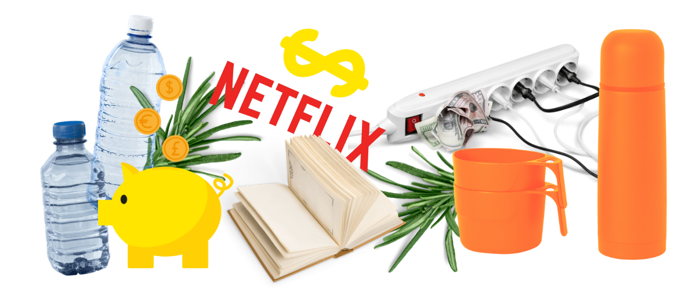

Gode råd & nye vaner?
Hverdagens mønstre og rutiner betyder meget for vores liv. Nogle vaner lægger vi slet ikke mærke til, mens vi er helt bevidste om andre. Vaner kan gavne positivt og negativt i vores hverdagsøkonomi. I dag vil vi give redaktionens bedste råd, som du med øvelse kan gøre til en vane i din hverdag. Prøv for eksempel en af disse eksempler af i en uge ad gangen, og se om det kan blive en vane som du kan inkorporere i din hverdag.
1. Læg et budget
Som vi altid anbefaler, er den første vane at føre budget. Budgettet kan være med til at give dig en ro i din økonomi, og sikre at du altid får betalt dine regninger til tiden. Læs mere om budget her.
2. Sluk for vandet når du børster tænder, og imens du vasker hår
Med stigende elregninger og en stram økonomi, er brusebade et godt sted at spare lidt penge.
3. Gem mad som ikke fejler noget. Altid..
Kødsovs fra gårsdagens bolognese? Det er fantastisk på et stykke toast med ost, som giver nemme minipizzaer. Gamle gulerødder og en brun kartoffel? Skær det værste væk og lave en suppe. Tørt rugbrød? Gem det i en brødkasse og lav øllebrød. Der findes masser af blogs om madspild på nettet. Gør dig brug af dem og lær at forvandle nederen mad til nye retter. Det sparer både tid og penge.
4. Track dine abonnementer.
Hvornår brugte du sidst dit fitness abonnement? Din Netflix? Eller hvad med din mobil – har du brug for fri data i hele verden? Abonnementer er gode, men de kan også udgøre store unødvendige udgifter i dit budget. Gør det til en vane at tjekke dine abonnementer, og vurdere om du stadig har brug for dem. Fx når du laver månedligt budget
5. Lav dine egne mad to-go løsninger
En klar synder er kantines kaffe på dit studie. Køb en god termokop og klargør kaffen hjemmefra i stedet. Aftal med dig selv hvornår du skal lave madpakke. Måske om morgenen før du tager afsted, eller lige efter aftensmad. På den måde sikrer du dig at den altid er lavet, så du slipper for at skulle købe frokost.
6. Køb dit tøj brugt, byt, eller på tilbud
Ahhh… Secondhand! Either you love it, or you hate it. Hvis du kan affinde dig med at en anden har gået i dit tøj før, er alle former for secondhand og genbrug en god måde at spare penge på. Her kan du nemt spare 50-90% på dine tøjkøb. Ellers er et godt tip at kigge på de store tøj-kanoners tilbudssider; fx Boozt, Zalando og HM. Der er penge at spare!
7. Lån bøger i stedet for at shoppe
Har du en vane med at shoppe? Lån en bog i stedet. Måske gør det det ikke for dig den første gang. Men det skaber ro at læse, det gør dig klogere og det tager dig væk fra skærmen. Gør dig brug at dit studiebibliotek, eller din lokale mulighed. Det er gratis! (Da du allerede har betalt for det i din skat!)
8. Spar på strømmen
Tænd et stearinlys når du læser på computeren. Hiv stikkene ud af kontakerne. Sluk for varmen på dit badeværelse. Luk køleskabet imens du hælder mælk på dine havregryn. Det er de små besparelser der tæller – og det er nemt når du vænner dig til det.
9. Brug dine fordele
Husk at du er studerende. Der er mange besparelser t hente, og du kan finde mange af dem på nettet. Brug for eksempel hjemmesiden Studiz.dk som giver dig et overblik over alle dine fordele. Er du medlem af HK som studerende? Det er gratis og lukker også op for en masse tilbud gennem dit OK-plus medlemskab.
10. Tjek din lønseddel
Ifølge HK er der fejl i 1 ud af 5 lønsedler. Derfor er det en god ide at skrive dine timer ned samt om du har overarbejdet, været syg osv. Hvis du er medlem af en fagforening, kan du få et løntjek. Husk også altid at spørge din arbejdsgiver, hvis du føler at noget er forkert på din lønseddel. Du har ret til at vide det.